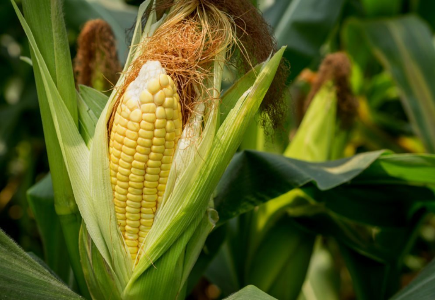
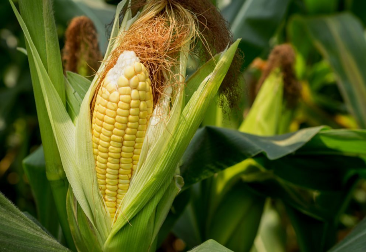

Descubre
La Historia
SIICT CULTIWARE es una herramienta digital para consultoría técnica especializada y profesional para cultivos agrícolas confiable y segura, y tiene por meta asegurar tanto la calidad como la producción a buen termino, mientras abastece los insumos, minimizando costos y perdidas, ayudando a reactivas el desarrollo socioeconómico de la región
Nosotros
 
